UDN
Search public documentation:
FBXMorphTargetPipelineCH
English Translation
日本語訳
한국어
Interested in the Unreal Engine?
Visit the Unreal Technology site.
Looking for jobs and company info?
Check out the Epic games site.
Questions about support via UDN?
Contact the UDN Staff
日本語訳
한국어
Interested in the Unreal Engine?
Visit the Unreal Technology site.
Looking for jobs and company info?
Check out the Epic games site.
Questions about support via UDN?
Contact the UDN Staff
UE3主页 > FBX内容通道 > FBX顶点变形目标通道
UE3主页 >动画 >FBX 顶点变形目标通道
UE3主页 > 角色美工人员 > FBX顶点变形目标通道
UE3主页 > 动画制作人员 > FBX顶点变形目标通道
UE3主页 >动画 >FBX 顶点变形目标通道
UE3主页 > 角色美工人员 > FBX顶点变形目标通道
UE3主页 > 动画制作人员 > FBX顶点变形目标通道
FBX顶点变形目标通道
概述
命名
- 3dsMax: 名称是Morpher修改器中的通道的名称。
- Maya: 名称是添加到blendshape（混合变形）节点上的混合变形的名称，比如[BlendShapeNode]_[BlendShape]。
设置顶点变形目标
- 从基础网格物体开始。
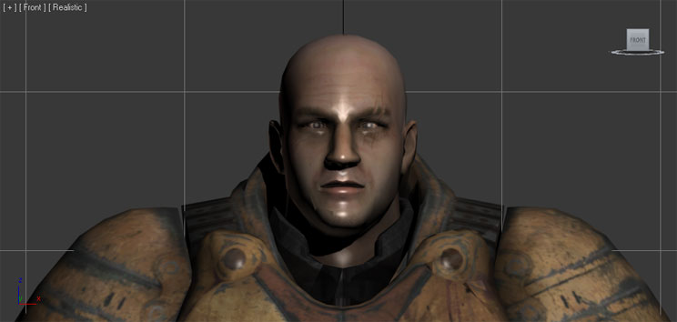
- 复制将要修改的网格物体来创建目标姿势。在这个实例中，它是头部。创建目标姿势。在这个实例中，目标姿势是角色眨眼。
- 添加一个 Morpher 修改器到基础网格物体。在堆栈中，它需要放在 Skin（皮肤修改器） 的前面。
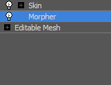
- 选中您想填充的顶点变形通道，按下 Morpher 修改器属性展开图中按下
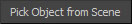
或右击该通道并选择 Pick Object From Scene 。
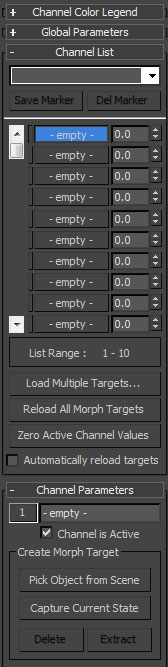
- 在视图中，点击目标网格物体。
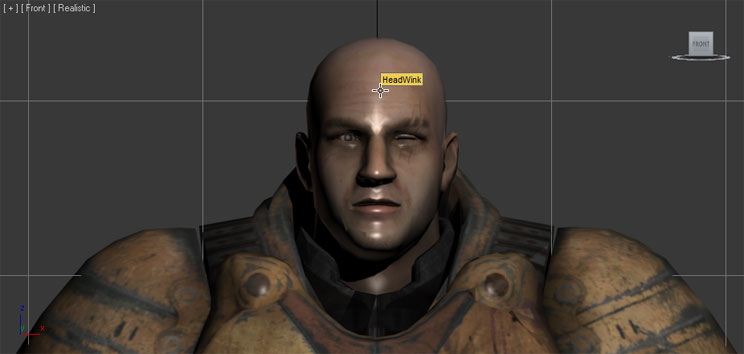
- 现在填充了顶点变形通道，并显示了目标网格物体的名称。这是在UnrealEd中赋给顶点变形目标的名称。您可以在 Morpher 修改器的展开列表中的 Channel Parameters（通道参数） 部分修改它。

- 将通道的权重调整为100.0将会导致基本网格物体朝目标姿势插值。
- 从基础网格物体开始。
- 复制将要修改的网格物体来创建目标姿势。在这个实例中，它是头部。创建目标姿势。在这个实例中，目标姿势是角色眨眼。

- 按照那个顺序选择目标网格物体，然后选择基础网格物体。

- 在 Animation(动画) 菜单集合中的 Create Deformers 菜单中，选择 Blend Shape（混合变形） 。如果需要，在这步之后可以删除目标网格物体。

- 现在可以在基础网格物体的属性中看到blend shape(混合变形)节点。这些是将要在UnrealEd中使用的名称。这里，您可以修改blendshape（混合变形）节点的名称和该混合变形。

- 将混合变形的权重调整为1.0将会导致基本网格物体向目标姿势插值。
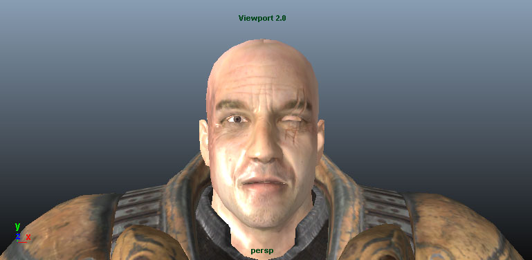
导出顶点变形目标
- 在视口中选中要导出的基础网格物体和骨骼。
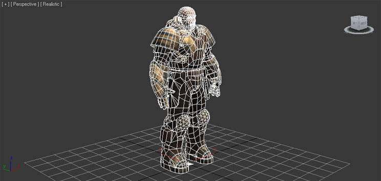
- 在 File(文件) 菜单中选择 Export Selected(导出选中项) (或者您不管选中项是什么而是想导出场景中的所有资源，那么则选择 Export All(导出所有) ) 。

- 选择要将顶点变形目标导出到的FBX文件的位置及名称，并点击
 按钮。
按钮。

- 在 FBX Export（FBX导出） 对话框中设置适当的选项。为了导出顶点变形目标，您必须启用 Animations 复选框及所有 Deformations（变形） 选项。
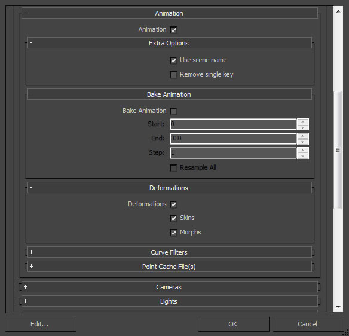
- 点击 按钮来创建包含该顶点变形目标的FBX文件。
- 在视口中选中要导出的网格物体和关节。

- 在 File(文件) 菜单中选择 Export Selected(导出选中项) (或者您不管选中项是什么而是想导出场景中的所有资源，那么则选择 Export All(导出所有) ) 。

- 选择要将顶点变形目标导出到的FBX文件的位置及名称，并在 FBX Export（FBX导出） 对话框中设置适当的选系那个 。为了导出顶点变形目标，您必须启用 Animations 复选框及所有 Deformed Models（变形模型） 选项。
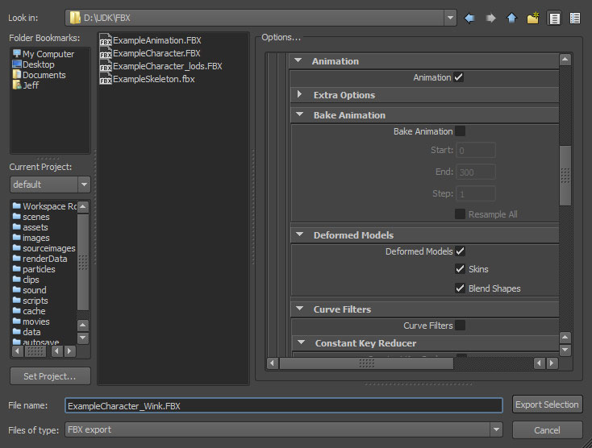
- 点击
 按钮来创建包含该顶点变形目标的FBX文件。
按钮来创建包含该顶点变形目标的FBX文件。
导入顶点变形目标
- 在内容浏览器中点击
按钮。再打开的文件浏览器中导航到您想导入的文件并选中它。*注意:* 您可以在下拉菜单中选择
 来过滤不需要的文件。
来过滤不需要的文件。
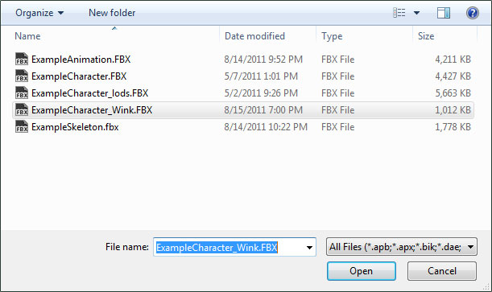
- 在 Import(导入) 对话框中选择适当的设置。确保启用 Import Morph Targets(导入顶点变形目标) 。*注意:* 导入的网格物体的名称将会遵循默认的命名规则。请参照 FBX导入对话框部分获得关于这些设置的完整信息。
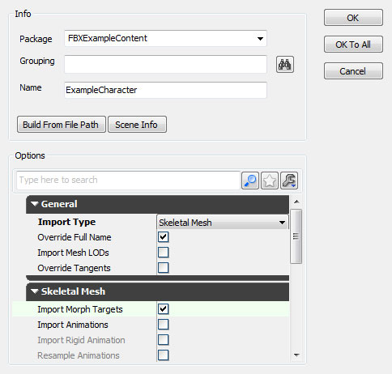
- 点击
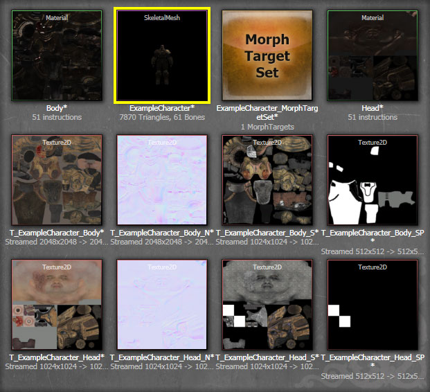
通过在AnimSet编辑器中查看导入的网格物体并在 Morph(顶点变形) 标签中选中新创建的MorphTargetSet，您可以调整导入的顶点变形目标的强度并查看它是否按照期望方式工作。
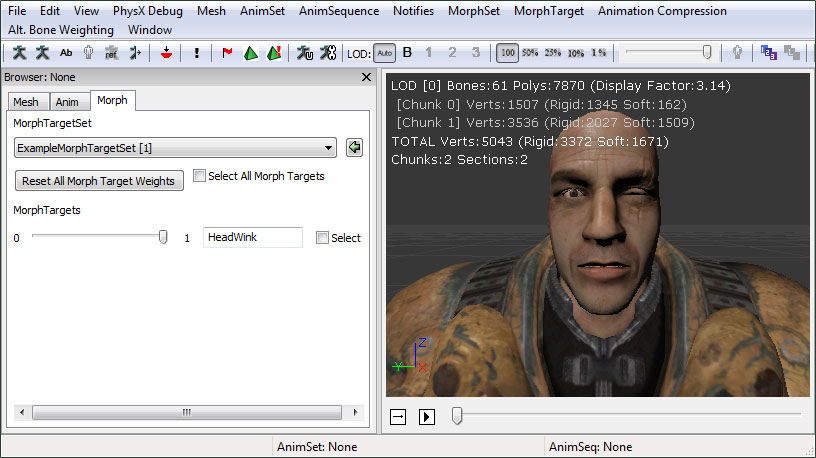
- 通过在内容浏览器中双击您想将顶点变形目标导入的MorphTargetSet来打开它，或者通过双击和该MorphTargetSet 相关的骨架网格物体然后在AnimSet编辑器的 Morph 选卡中选择MorphTargetSet来打开它。

- 在AnimSet编辑器的 File(文件) 菜单，选中 Import MorphTarget(导入顶点变形目标) (或者其他顶点变形目标选项中的其中一个）。

- 在文件浏览器中导航到包含顶点变形目标的FBX文件并选中它。*注意:* 您可能需要设置文件格式为
 来查看您的文件。
来查看您的文件。
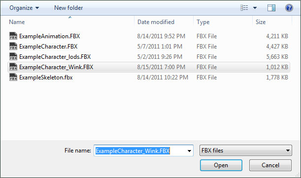
- 当导入顶点变形目标时会显示一个进度对话框。一旦完成，新的顶点变形目标将显示在 Morph 标签的 Morph Targets（顶点变形目标） 列表中。

现在您可以调整导入的顶点变形目标序列的强度，并查看它是否能正常工作。